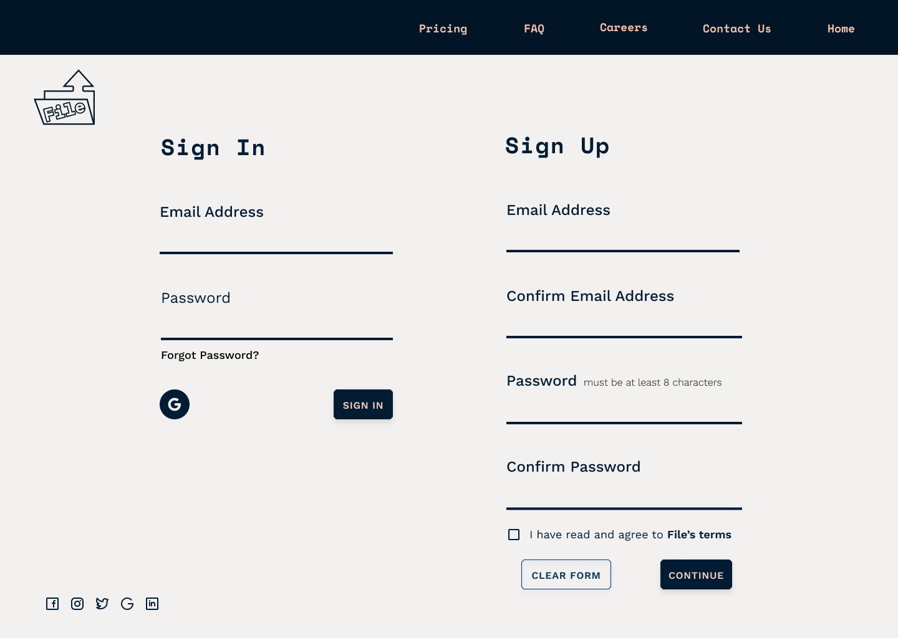
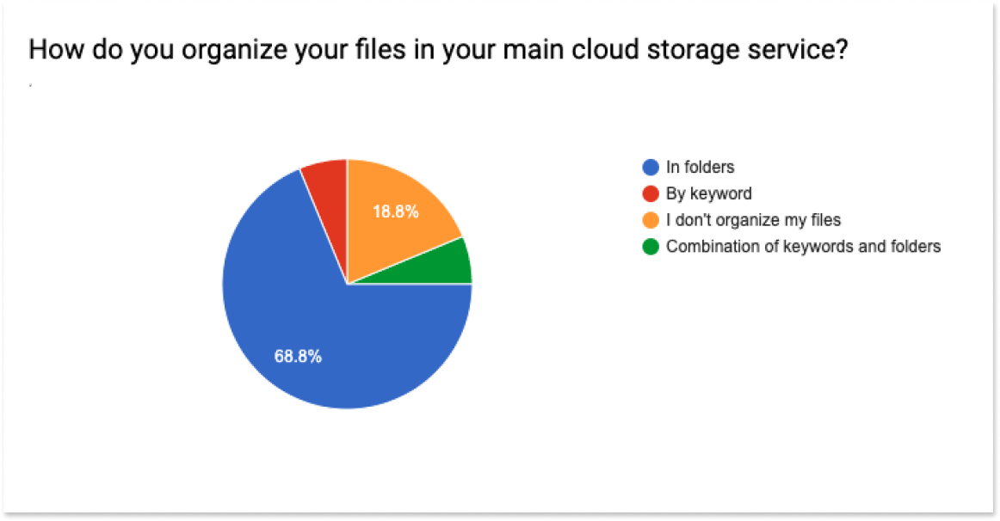
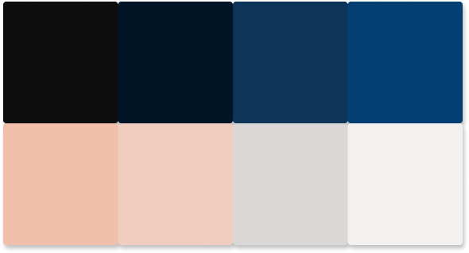

The Problem
The client wanted to throw their hat into the cloud storage services ring but didn’t have a clear direction or target audience in mind. They believed that the current cloud storage services left much to be desired, and I was tasked with articulating that gap and producing a product that filled it. The client expressed that the product must be able to save content from the web, easily organize content, offer the ability to create content through the application and be able to upload files.

The Solution
Through my research, I was able to detect a consistent issue amongst cloud service users- the amount of free space is quickly used up. While most, if not all, users would be thrilled if a service offered free unlimited space, that is not exactly realistic. After in-depth user research, I discovered a lot of users are carrying around digital “dead-weight” in their cloud applications; even the most organized users were storing files that they haven’t opened in years. File implements a self-filtering process that automatically deletes files that have not been opened in an amount of time set by the user. In addition to offering what the client requested we solved a problem for many users and created a target market that expanded across demographics.
The Process

User Research
I began my research on this project by conducting a survey. My main goals were to: identify what cloud services users used most, what they enjoyed about those services and what they didn’t, what files they used to store, and what was the main purpose of their storage use.
The survey reached over 40 users. Almost all polled (96%) used more than one cloud service; nearly 90% of users used Google Drive, while 75% used DropBox and the 6% used other services such as iCloud, Figma, Box, and Evernote. Aside from space, users also complained about their cloud service not being intuitively organized and the folder structure being “difficult to traverse”.
Competitve Analysis
I opted to research Google Drive, Dropbox, and Box. There was a fair amount of consistency throughout their product features, all offered the ability to create documents within their service, easily allowed users to share documents and ownership. The three competitors differed in their expertise Google Drive offered the most amount of free space, Dropbox was geared towards smaller teams and freelancers, and Box was the best option for larger businesses as they offered multiple pricing tiers and complex security features. It was clear that to compete, a new service would have to offer something that set itself apart. Read a more in-depth analysis here.
User Personas
In an effort to flesh out a more detailed target audience, I interviewed 4 of the individuals I had surveyed. I asked more in-depth questions and actually prompted them to explore their main cloud storage services to see if there was “digital dead weight”. From these answers, I crafted a few user personas. My user personas were individuals from various backgrounds but who all struggled with keeping their documents organized.
User Stories and Flows
After completing the personas, I was able to identify File’s MVP and create user stories and flows to set the groundwork for the visual design.
User Stories
User Flows
Wireframes
From the creation of my user stories and flows, I was able to construct the bones of what would become File. I was able to construct a basic user flow and the general idea of how I wanted the product to work.
User Testing Round One
I did three user tests of my wireframe’s prototype. I was able to see my prototype being used in real-time and along with my testers, to articulate what worked, what didn’t, and what I could improve upon.
Through user testing I was able to see that work had to be done. I needed to organize my onboarding process, make sure that all screens had exit routes, and eliminate the amount of modals in the design. View my prototype here.


Branding
My focus with the branding was on promoting that the app would be organizing a user’s content for them. The name File presented itself as a great option since it worked on multiple levels. File needed to embody clean and organized minimalism.
For color, I wanted something that was minimalist and modern but with a hint of youth. I stuck with dark blue tones that were contrasted with a nice peach.
After a few iterations, I opted to design a file folder logo for File. The arrow replaces the tab to insinuate files being dropped into the cloud, and it uses the brand colors in a playful way.
View my full style guide here.
High Fidelity Mockups
My next steps were to combine my visual and branding standards and my wireframes in Figma to make high fidelity visual mockups and turn them into a working prototype in InVision.
These two phases went through a number of revisions and iterations which provided me with the insight to create a comprehensive product. View the prototype here.
User Testing Round Two
After finishing my prototype, I went in for another round of user testing. I tested three different individuals from my initial test. This series of testing pointed out a lot of design inconsistencies and I had to do quite a few revisions until I addressed all issues. They ranged from simple: calls to action being more visible or being able to clearly exit a modal, to more complex: File’s brand not being clearly stated in the home page and a convoluted sign-up process. I made the necessary revisions and created a much better product.
Conclusion
In creating File, I was able to gain a much greater understanding of the design process. I learned a tremendous amount through the revision process. At times it was a bit painful, but I saw the merit and necessity of revision and was able to further develop my eye for design. I got to see the design cycle in action, I often went back to my user research to answer my own questions concerning my designs.
The importance of user testing and the MVP were made extremely evident throughout this process, I found that revisiting goals through user testing was a great way to develop and articulate standards.
Throughout this process, I was able to flesh out my own personal process. It taught me how to receive and implement feedback and criticism properly and how to successfully create a digital product.